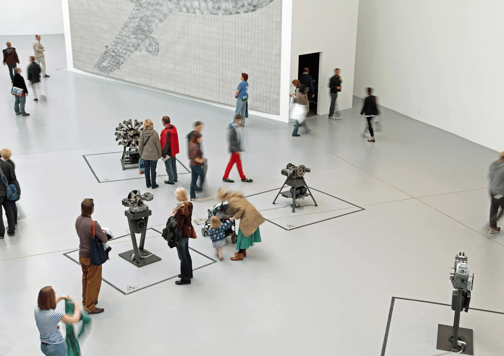
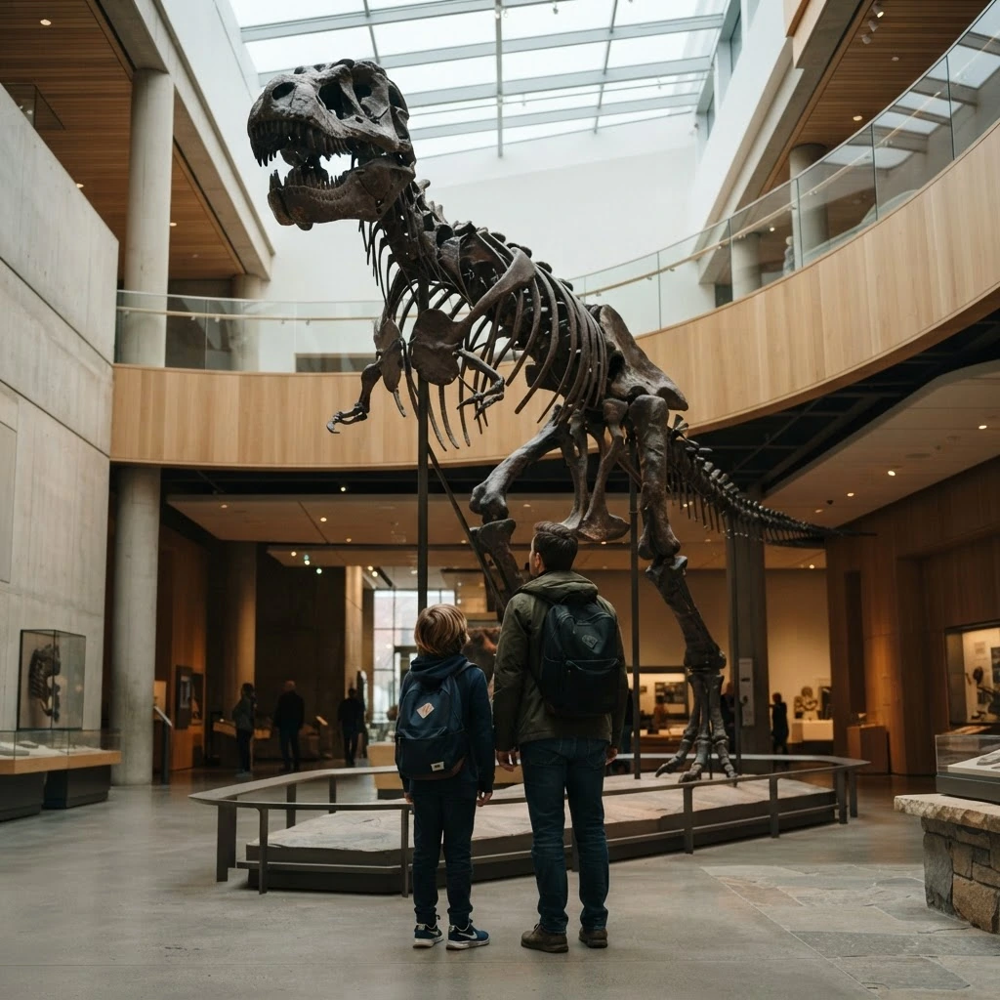
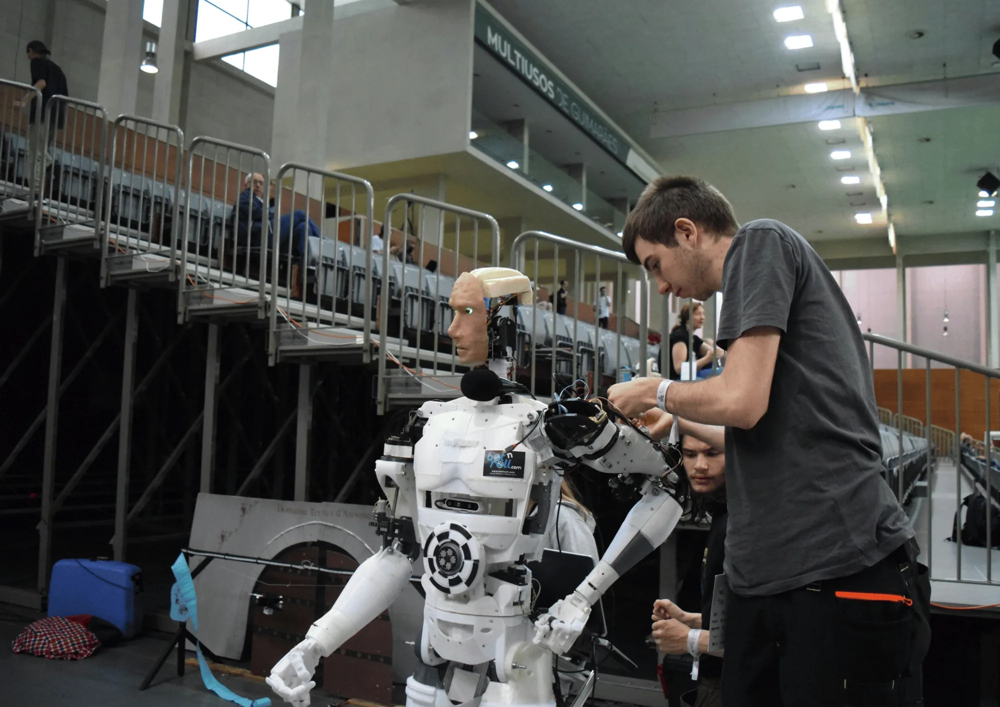

Support
Give support
Donations are an important way the museum remains open and accessible to the whole community.
Support the museumThe museum is built around its community. Support can mean donating, volunteering, sharing a collection or learning alongside the people who keep the museum running.
See how you can help
Every kind of contribution helps the museum remain useful, accessible and connected to the wider community.
Support
Donations are an important way the museum remains open and accessible to the whole community.
Support the museumVolunteer
Volunteers help keep displays ready for visitors, gain access to staff-only lectures and join a monthly staff-and-volunteer lunch.
Ask about volunteeringInternships
Work alongside academics and people who are passionate about science, nature and sharing knowledge with the wider community.
Ask about internships
Donate to the collection
If you own an item or collection that others might enjoy, the museum’s Collections Department can help assess whether it could become part of the collection.
Contact collectionsBehind the scenes
Volunteering and internships are a chance to understand how exhibitions are maintained, how ideas are developed and how science is communicated to the public.

Ready to get involved?
Tell us whether you are asking about support, volunteering, internships, collections or a school visit.
Email: kontakt@folketsvitensenter.no